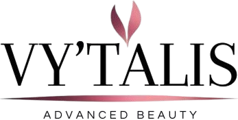
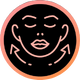
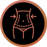
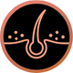
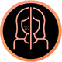
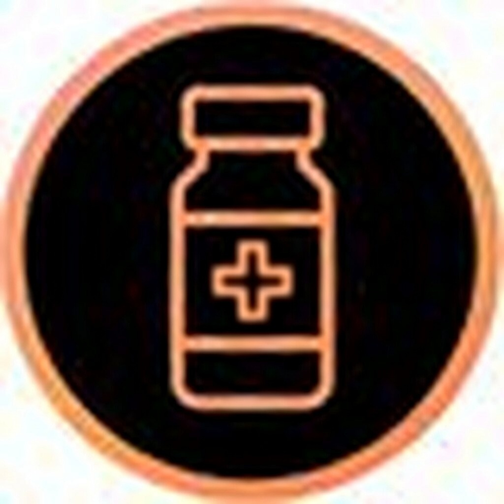

whatsappResultados visibles, cuidado profesional
y tratamientos estéticos de última generación
para rostro y cuerpo.

Profunda limpieza de poros y control de impurezas
Tratamiento de limpieza integral que elimina impurezas, puntos negros, comedones y exceso de sebo acumulado en los poros. Incluye desmaquillante, exfoliación suave, extracción profesional y masaje relajante.
Duración: 50-70 minutos
Ideal para: pieles mixtas, grasas y propensas a acné. Recomendado cada 2-3 semanas.
Beneficios: reducción de brotes, poros visiblemente más limpios y refinados, textura mejorada, mayor claridad y luminosidad.
Hidratación profunda y renovación celular intensiva
Tratamiento revolucionario no invasivo que combina vortex-fusion, limpieza, exfoliación mecánica e infusión de sueros concentrados con ácido hialurónico, vitaminas y antioxidantes para una piel más luminosa y rejuvenecida.
Duración: 60-90 minutos
Procedimiento: tecnología patentada que succiona suavemente mientras infunde activos. Sin dolor ni irritación.
Resultados: piel profundamente hidratada, reducción de líneas finas, tono más uniforme, luminosidad inmediata. Resultados progresivos con sesiones mensuales.
Control integral y tratamiento del acné activo
Protocolos médicos y cosméticos especializados que reducen inflamación, controlan la producción de sebo, eliminan bacterias causantes del acné y previenen cicatrices. Incluye limpieza especializada, mascarillas desinflamantes y tratamientos tópicos profesionales.
Duración: 60-70 minutos
Indicado para: acné activo, comedones, puntos negros, rosácea y pieles propensas a inflamación.
Incluye: diagnóstico completo, tratamiento personalizado, pautas de cuidado en casa y seguimiento personalizado.
Alivio y recuperación para pieles sensibles
Fórmulas calmantes, regenerantes y antinflamatorias que reducen enrojecimiento, fortalecen la barrera cutánea, aceleran la recuperación y serenan la piel irritada. Ideal post-procedimiento o para pieles reactivas.
Duración: 50-60 minutos
Componentes: extractos de caléndula, aloe vera, avena coloidal y ácido hialurónico.
Recomendado para: piel post-procedimiento, rosácea, dermatitis, sensibilidad crónica y recuperación post-operatoria.
Técnicas combinadas anti-edad de múltiples niveles
Protocolos integrales que incluyen peelings químicos, mesoterapia facial, microdermoabrasión, masajes regeneradores y complementos cosméticos para mejorar firmeza, textura, elasticidad y luminosidad global del rostro.
Duración: 80-100 minutos
Componentes: retinol, vitamina C, péptidos, factores de crecimiento y ácidos exfoliantes profesionales.
Objetivo: reducir visiblemente arrugas, líneas de expresión, mejorar volumen perdido, restaurar un aspecto más juvenil y radiante. Resultados progresivos con sesiones cada 7-10 días.

Relajación profunda y alivio muscular integral
Técnicas manuales terapéuticas que descontracturan la musculatura, liberan tensiones acumuladas, mejoran la circulación sanguínea and linfática, y promueven el bienestar general del organismo.
Duración: 60-90 minutos
Técnicas incluidas: sueco, shiatsu y descontracturante según ubicación de tensiones.
Ideal para: personas con tensión muscular crónica, estrés, fatiga post-laboral, contracturas cervicales y dorso-lumbares.
Beneficios: reducción de estrés, mejoría del sueño, alivio del dolor muscular, mejora de la circulación y sensación de relajación profunda.
Modelado corporal y reducción localizada profesional
Protocolos avanzados que combinan aparatología profesional (radiofrecuencia, ultrasonido, cavitación) con técnicas manuales para reducir volumen localizado, mejorar contornos y potenciar resultados estéticos.
Duración: 50-80 minutos
Zonas tratables: abdomen, flancos, muslos, brazos, cartucheras y glúteos.
Resultados: reducción localizada visible, mejora de contornos, piel más tensa. Resultados óptimos con plan de 6-8 sesiones.
Complementos: se recomienda acompañar con hidratación, masajes drenantes y cuidados en casa.
Piel más suave, renovada y luminosa
Eliminación controlada y profesional de células muertas mediante técnicas físicas (microdermoabrasión, goma de caucho) o químicas (ácidos suaves) para mejorar textura, uniformidad y preparar la piel para mejores resultados en otros tratamientos.
Duración: 45-60 minutos
Zonas: brazos, espalda, glúteos, muslos, pies y zonas ásperas.
Beneficios: estimulación de renovación celular, mejor absorción de productos, mayor luminosidad, textura uniforme, reducción de queratosis.
Seguimiento: idóneo cada 2 semanas para mantener resultados óptimos.
Nutrientes profundos y desintoxicación corporal
Envolturas con ingredientes activos (algas, arcillas, aceites esenciales, minerales) que penetran profundamente en la piel para nutrirla, desintoxicarla y mejorar visiblemente su apariencia, firmeza y luminosidad.
Duración: 60-75 minutos
Tipos de envolturas: anticeluliticas, reafirmantes, hidratantes, desintoxicantes y relajantes.
Ideal para: piel deshidratada, flacidez, celulitis, estrías, recuperación post-cambios de peso y bienestar integral.
Beneficios: hidratación profunda, alivio corporal, mejora de la circulación, suavidad y brillo, sensación de relajación.
Reducción de retención líquida y mejora circulatoria profunda
Técnica manual suave y especializada que estimula el sistema linfático para eliminar líquidos acumulados, toxinas y mejorar la circulación. Mejora la descarga de residuos metabólicos y edemas.
Duración: 50-70 minutos
Método: movimientos suaves direccionales que respetan el flujo natural del sistema linfático.
Recomendado para: post-operatorio quirúrgico, post-procedimientos estéticos, edema crónico, retención de líquidos y pesadez en extremidades.
Beneficios: reducción de hinchazón, descarga de líquidos, mejoría de la circulación, sensación de ligereza.

Fortalecimiento profundo y nutrición capilar intensiva
Protocolos profesionales con activos concentrados (proteínas, queratina, aminoácidos, vitaminas) que penetran en la fibra capilar para reconstruir, fortalecer y mejorar visiblemente el brillo, suavidad y resistencia del cabello dañado.
Duración: 60-75 minutos
Indicado para: cabello dañado, reseco, quemado, rebelde, opaco, débil, con puntas abiertas o post-tratamientos químicos.
Incluye: diagnóstico capilar completo, tratamiento personalizado, recomendaciones domesticas y seguimiento profesional.
Resultados: cabello más fuerte, brillante, suave, maneable y resistente. Ideal aplicar cada 2-3 semanas.
Depilación segura, duradera y progresiva
Tecnología láser de última generación que emite pulsos de luz controlada para destruir el folículo piloso sin afectar la piel circundante. Resultados visibles y progresivos sesión a sesión.
Duración: 20-60 minutos según zona
Zonas treatable: rostro, axilas, piernas, brazos, zona íntima, abdomen y espalda.
Recomendado para: cualquier tipo de piel y vello (adaptamos intensidad según melanina). Sesiones cada 4-6 semanas, plan de 6-8 sesiones para depilación semipermanente.
Ventajas: resultados duraderos, sin ingrown hairs, piel más suave, económico a largo plazo comparado con depilación recurrente.
Rutinas profesionales y mantenimiento capilar preventivo
Protocolos regulares de cuidado que mantienen el cuero cabelludo equilibrado, el cabello en óptimas condiciones y previenen problemas futuros. Incluye diagnóstico, limpieza profunda, masajes estimulantes y tratamientos específicos.
Duración: 45-60 minutos
Indicado para: cabello normal, graso, seco, mixto, sensible o cueroa cabelludo irritable.
Beneficios: menor fragilidad, mayor brillo, aumento de elasticidad, cuero cabelludo sano, prevención de caída y mantenimiento óptimo del cabello.
Recomendación: realizar cada 4 semanas como mantenimiento preventivo.
Recuperación del tejido capilar y estimulación folicular
Procedimientos profesionales que estimulan los folículos dormidos, mejoran la circulación local, fortalecen el cuero cabelludo dañado y promueven la regeneración del cabello. Combina técnicas manuales y complementos bioactivos.
Duración: 60-80 minutos
Indicado para: zonas con afinamiento, pérdida de densidad localizada, cuero cabelludo dañado, estrés capilar y recuperación post-tratamientos agresivos.
Plan de tratamiento: mínimo 8-10 sesiones mensuales para apreciar cambios significativos en densidad y salud.
Resultados: mayor densidad, cabello más robusto, cuero cabelludo recuperado, reducción de caída.
Terapias integrales para mejorar densidad y detener caída
Protocolos médicos y cosméticos especializados que abordan las causas de la caída (estrés, nutrición, hormonas, estrés oxidativo) con tratamientos que fortalecen el folículo, mejoran la circulación y recuperan la densidad progresivamente.
Duración de sesión: 50-70 minutos
Diagnosis previo: valoración dermatológica y tricológica para identificar causa raíz.
Plan personalizado: incluye mesoterapia, laser capilar, suplementos orales recomendados y rutina doméstica específica. Mínimo 12 sesiones para apreciar cambios.
Resultados: detención de caída anómala, mayor densidad, cabello más fuerte, recuperación del ciclo capilar normal.

Diseños personalizados
Diseños según forma del rostro, tono y preferencias para resaltar la mirada de forma natural.
Ideal para: mejorar simetría y densidad aparente de las cejas.
Definición y coloración naturel
Técnica para mejorar contorno y color de labios con resultados sutiles y duraderos.
Resultados: labios con mayor definición y apariencia más saludable.
Soluciones para pérdida de densidad
Técnicas que simulan mayor densidad capilar para camuflar zonas con poco cabello.
Recomendado para: afinamiento, cicatrices o alopecias localizadas.
Camuflaje profesional
Técnicas para disimular cicatrices y mejorar uniformidad de la piel con pigmentos compatibles.
Objetivo: mejorar apariencia y confianza del paciente.
Técnica pelo a pelo
Acabado natural y preciso para cejas con efectos inmediatos y durabilidad según cuidados.
Cuidados: seguimiento y retoques según recomendación profesional.

💉 Botox Full Face
Rejuvenecimiento integral del rostro que suaviza líneas de expresión, mejora la simetría facial y brinda una apariencia fresca y descansada.
💧 Rellenos con Ácido Hialurónico
Restaura volúmenes, define contornos y mejora la hidratación profunda de la piel con resultados armónicos y naturales.
👃 Rinomodelación sin Cirugía
Corrección no quirúrgica de imperfecciones nasales para mejorar el perfil facial con resultados inmediatos y sin tiempos prolongados de recuperación.
🧬 Bioestimuladores de Colágeno
Tratamientos que estimulan la producción natural de colágeno, mejorando firmeza, textura y calidad de la piel de forma progresiva.
✨ Baby Botox / Botox Preventivo
Previene y suaviza líneas de expresión manteniendo la naturalidad del rostro.
💉 Botox Full Face
Tratamiento completo para rejuvenecer el rostro sin perder expresión.
😬 Botox para Bruxismo
Relaja el músculo masetero, reduce el dolor mandibular y mejora el contorno facial.
💎 Rellenos Faciales
Ideal para labios, surcos, pómulos, mentón y ojeras. Aporta volumen, definición e hidratación.
👃 Rinomodelación
Mejora la forma de la nariz sin cirugía ni anestesia general.
🔗 Puntos de Anclaje Facial
Técnica avanzada que redefine el óvalo facial y mejora la flacidez mediante soporte estructural.
🌿 Jalupro Super Hydro
Bioestimulador premium que hidrata profundamente, mejora la textura de la piel y aporta luminosidad.
💎 Hidroxiapatita de Calcio
Tratamiento reafirmante que estimula colágeno y mejora la flacidez con resultados duraderos y naturales.
Somos un equipo de profesionales especializados en Estética Integral y Cosmiatria con formación académica y experiencia certificada.
Nuestra misión es cambiar la vida de nuestros clientes haciéndolos sentir bien, primeramente consigo mismos y a su vez con el entorno que percibe esos cambios que transforman su realidad. Todo con protocolos profesionales, tecnología avanzada y productos de calidad.
Nuestra Visión es llegar a ser un Centro Estético conocido por la calidad de nuestros servicios, al grado de dejar una huella imborrable de Bienestar Integral en cada uno de nuestros clientes.
Lunes a Sábado:
10:00 am - 8:00 pm
Domingo/Feriados:
Cerrado
 facebook
facebook